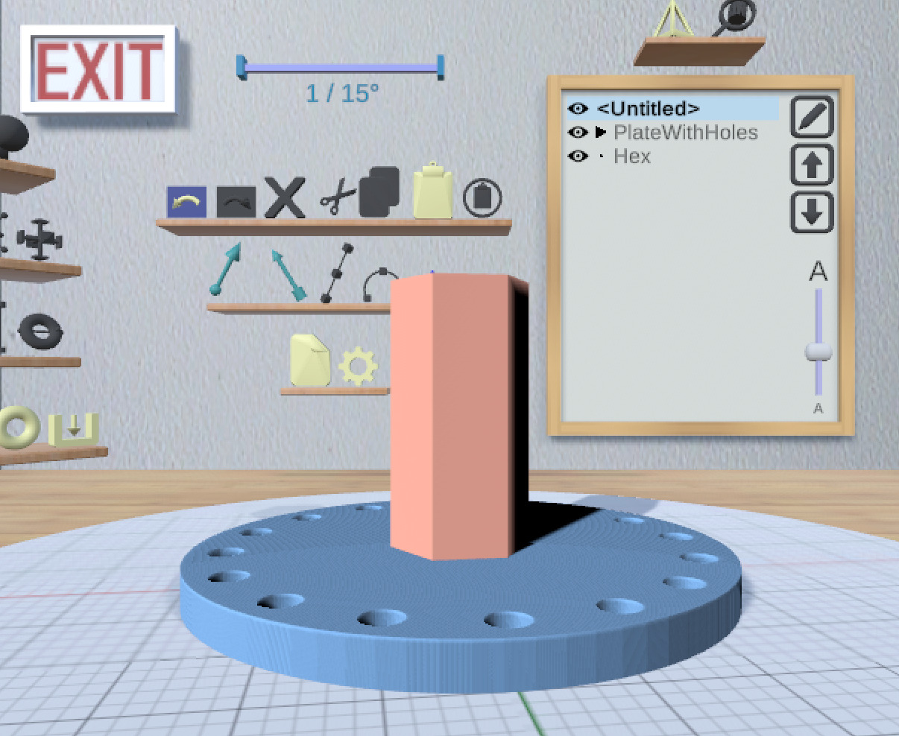

Welcome to MakerVR

Overview
MakerVR is a VR-enabled application for creating 3D-printable models. "VR-enabled" means that it can be used in VR, but also works in a standard mouse+keyboard configuration. In fact, it can also be used in VR without the headset on. You can use any combination of VR controllers, mouse, and keyboard in that mode.
Models may be saved as STL files that can then be sent to a 3D printer.
MakerVR is available for Windows and Linux. There is also a Mac version, but it may or not work in VR due to the lack of official SteamVR support; I was unable to get SteamVR to display on the HTC Vive, but that might be due to specific hardware limitations. There is also some missing shader support which means that it is not possible to display polygonal edges on models.
Installing and Running MakerVR
The application is available as Zip files in the MakerVR distribution GitHub
repository. Download the file for your
operating system, extract it anywhere, and execute the MakerVR executable
file in the resulting directory.
Getting Started
MakerVR is pretty intuitive once you get to know a few things. You could try using it right away without any guidance, but you'd probably be better off taking a look at the User Guide first.
VR Setup
MakerVR has been tested only with the HTC Vive and Oculus Quest 2. It may work with other devices as well. (I can't tell because I don't have them.)
If you are running MakerVR on Windows without any VR device connected, it will attempt to open SteamVR anyway, causing an error window to appear. You can just ignore it.
HTC Vive
The Vive needs to be connected to your computer (HDMI and USB). On Linux, you will probably need to start SteamVR first before running MakerVR with the Vive attached. I find it easiest to use MakerVR while in a comfortable seated position, so set up your Vive room accordingly if that's what you want.
Oculus Quest 2 (Windows Only)
- Connect the Quest to a USB 3 port.
- Enable Oculus Link on the Quest.
- Make sure the Oculus app is open.
- Run MakerVR. Things should work properly.